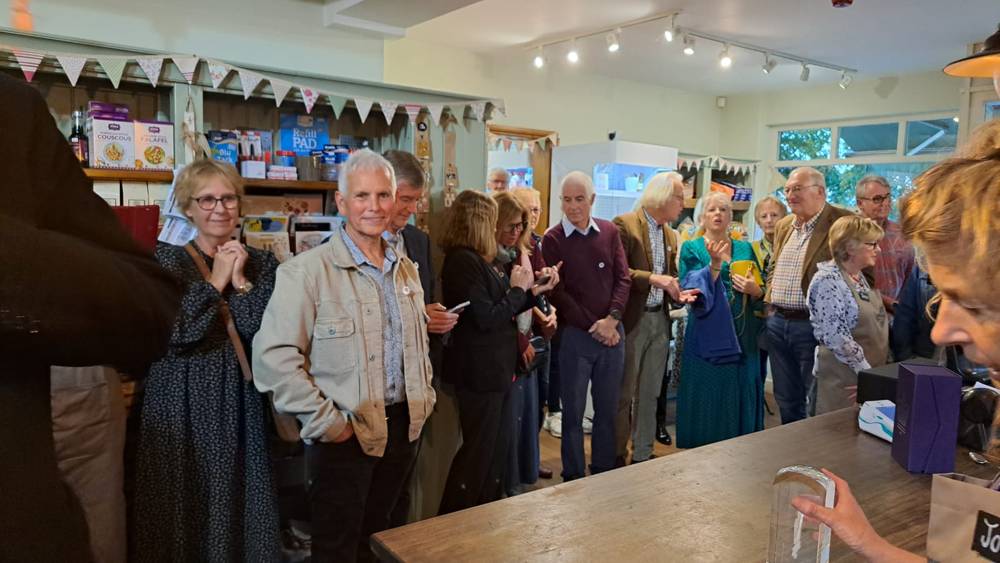

"Each journey begins with a single step" - Lao Tzu
Why not make this the day when you start you journey into volunteering? You will discover many benefits, make new friends and do something worthwhile for your community
The best way to get started is by visiting the shop and talking to one of our volunteers. If you prefer to set up a time then email volunteers@thecfcshop.co.uk and we will arrange that
We will show you around and explain the kind of things that you could get involved in
The next step would then be to try a session working with other volunteers to get a better feel for what it is like
At no point do you need to make a firm commitment - we will show you how to sign up on the rota so eventually you are free to pick any shifts (mostly 2 hours) that suit you
Then try one or two shifts working alongside other volunteers
That's it!